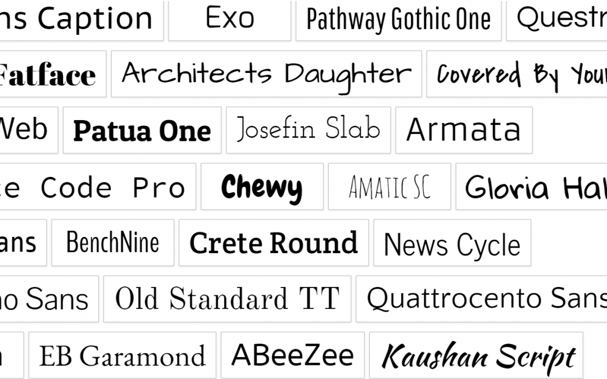

Media Queries
Las media queries son reglas que se introducen en una hoja de estilo CSS para definir propiedades específicas para distintos medios. Permitiendo diferentes comportamientos y logrando adaptabilidad sin tener que cambiar el contenido original.
Estas son la base para el diseño responsivo. Permitiendo asi que el diseño se adapte a diferentes dispositivos y tipos de pantalla
Las media queries se implementaron en 2012 como una solución para la creciente demanda de multiples tamaños de pantalla. Siendo implementadas con la versión CSS3, pasando a ser un estándar en la web. Estas tambien se implementaron como una forma de mejorar la accesibilidad, permitiendo auimentar las fuentes, mejorar el contraste, etc.

Tipos y funciones de medios
Se pueden definir
- all: Todos los tipos de dispositivos
- print: Para impresoras
- screen: Para pantallas
- scpeech: Para lectores de pantalla (personas con discapacidad visual)
Las media queries y el diseño responsive
El objetivo de utilizar una Media Query en una hoja de estilo CSS en nuestra página web es que se ejecute una regla o un conjunto de reglas si se cumple una condición determinada, como puede ser el ancho máximo de pantalla.
De esta manera podremos, por ejemplo, realizar un diseño que tenga una columna en dispositivos móviles, dos columnas en tablets y tres columnas en ordenadores portátiles y de sobremesa.
Ejemplos:


Google Fonts
Es un directorio interactivo de uso libre bajo la aplicación que programa interfaces para fuentes de la web. Fue creado en 2010. Las fuentes estan con una licencia abierta tanto SIL y Apache permitiendo su uso libre Las fuentes son subidas por Skyfonts, ADobe y Typekit.
Las Fuentes de Google están diseñadas para proporcionar una plataforma gratuita para usuarios con el fin de descubrir nuevas fuentes y se está utilizado extensamente, algunas de las fuentes que incluye son Lato, Raleway, y Langosta.
Su Misión es: "Creemos que la mejor manera de aportar personalidad y rendimiento a sitios web y productos es a través de un excelente diseño y tecnología. Nuestro objetivo es simplificar ese proceso, ofreciendo una colección intuitiva y sólida de fuentes e íconos de código abierto. Mediante el uso de nuestro extenso catálogo , puede compartir e integrar tipos e íconos en cualquier proyecto de diseño sin problemas, sin importar en qué parte del mundo se encuentre.
Pasos para utilizarlas
Para usarlas se puede agregar las etiquetas de enlace de Google Fonts ya sea una o todas juntas en la pagina de configuración o en el campo HTML del encabezado (header)
- Navega a fonts.google.com.
- En la barra de búsqueda, busca el nombre de la fuente deseada.
- Haz clic en el nombre de la fuente para ver una lista completa de estilos disponibles para importar.
- Haz clic en + Seleccionar este estilo junto a cada estilo que deseas importar desde esta fuente.
- En el panel derecho, selecciona la pestaña Incrustar y luego selecciona @import.
- Copiar el script y agregarlo a la parte superor de la hoja de estilo